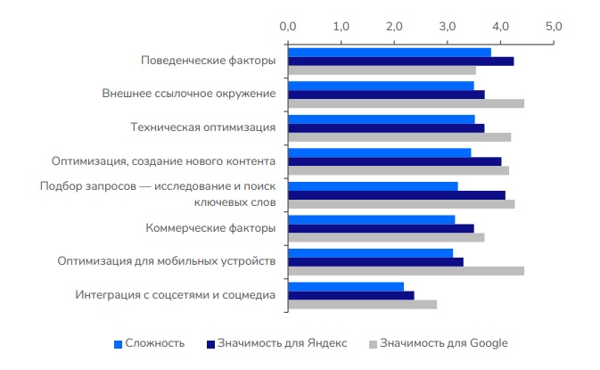

За последние годы в поисковой выдаче Яндекса произошел ряд заметных изменений. В первую очередь это касается появления турбо-страниц, товарной выдачи и улучшения поиска по низкочастотным запросам. Начали отображаться отзывы и репутация компании, которые также могут повлиять на ранжирование сайтов и на их привлекательность для пользователей. По мере выхода этих обновлений некоторые компании проседали, однако постепенно ситуация была сбалансирована.
На сегодняшний день среди важнейших факторов для продвижения в Яндексе – поведенческие. Однако сейчас есть некоторые проблемы, связанные с накруткой, – это приводит к снижению их влияния. Кроме этого, важны внешние ссылки и внутренние факторы, контент.
Тем не менее, все наблюдаемые изменения не настолько серьезны, как апдейты 2014–2015-х годов, когда после запуска алгоритма «Минусинск» ряд популярных методов продвижения полностью утратили свою актуальность.
Входящие ссылки учитываются при ранжировании сайтов и заметно влияют на позиции в выдаче Яндекса.

SEO-специалисты и эксперты рынка, опрошенные командой LinksSape, высоко оценивают роль линкбилдинга в Яндексе
При этом по ряду причин продвигаться ссылками в этом поисковике немного сложнее, чем в Google. Во-первых, скорость, с которой индексируются ссылки, у Яндекса ниже. Таким образом, первые изменения в выдаче, вы, скорее всего, обнаружите не так быстро. Кроме того, с точки зрения удобства и безопасности линкбилдинга существует нюанс, который надо учитывать при работе. В Google достаточно просто поменять ссылки, которые вас не устраивают или мешают дальнейшему продвижению. А вот в Яндексе нет подобного инструмента – такие манипуляции потребуют больших затрат времени и сил.
Также, говоря о ссылочном продвижении, нужно отметить, что выдача Яндекса в сравнении с Google менее разнообразна – в ней меньше уникальных доменов. Например, в тематике «Медицина» в топ-50 выдачи Google их было 3700, а в Яндексе – существенно меньше.
Статистика по доле уникальных доменов в топ-50 выдачи тематики «Медицина» в 2022 году
В целом продвижение в обоих поисковиках опирается на одни принципы. Однако есть случаи, когда сайт хорошо ранжируется в одном, но очень плохо – в другом. Может быть даже такое, что сайт вообще не получает трафика из одного поисковика.
Яндекс любит более разнообразный профиль, больше статейных качественных ссылок, ссылок из обсуждений и сквозных. При этом последние работают особенно хорошо. Это подтверждается экспертными мнениями, исследованиями и опросами пользователей ссылочных сервисов.
Егор Иванов, SEO-специалист
Если вы хотите эффективно продвигать сайты в выдаче Яндекса, лучше всего воспользоваться рядом проверенных рекомендаций. Так, если у вас на сайте имеются товары и услуги, которые более полугода отсутствуют в наличии и не собирают трафик, их можно удалять без малейшего сожаления. Это хорошая, рабочая схема. Иначе у вас накопится огромное количество мусорных страниц, которые будут тащить сайт вниз – это явление еще называется «зомби-страницами» и с ним необходимо бороться.
Также нужно убедиться, что в рамках технической оптимизации была сделана вся возможная микроразметка. Например, если в вашем интернет-магазине ее нет, вы теряете возможность получения расширенных сниппетов с картинкой. За отображение цены в поисковой выдаче чаще всего отвечает именно микроразметка. Она дает возможность получения поискового окна прямо на выдаче для главной страницы. Также и в Яндексе не так давно микроразметка «хлебных крошек» начала подтягивать в выдачу заголовки страниц, а не текст URL. Это позволяет получить более интересный и привлекательный сниппет с более высоким CTR.
Имеет смысл зарегистрировать сайт в каталоге 2gis и других распространенных белых справочниках организаций, а также полностью заполнить профиль компании в сервисах Яндекс Бизнес и Google My Business: добавить фотографии, ссылки на соцсети, указать цены на товары и услуги, и так далее. Эти источники при продвижении компании в регионах оцениваются поисковиком достаточно высоко. Велика вероятность, что вас найдут именно с помощью одного из справочников, если ваша карточка компании будет заполнена достаточно полно.
При линкбилдинге старайтесь придерживаться принципа: один донор – одна ссылка. Поставив один бэклинк с донора, вы получаете тот оценочный вес, который может передать вам домен. Если анализ конкурентов показывает, что вам нужно набрать дополнительное количество ссылок для улучшения ранжирования сайта, лучше не просто увеличить их количество, а сделать ссылки сквозными. Таким образом, одна и та же ссылка будет отображаться на всех страницах сайта, а вы можете значимо усилить ссылочный профиль.
При отборе ссылочных доноров ориентируйтесь на динамику общего поискового трафика сайта-донора. Если она будет положительной, то ссылки с таких ресурсов позволят более эффективно ранжироваться, в том числе и в Яндексе.
Есть еще один важный нюанс продвижения. Успешные кейсы показывают, что выполнение всех базовых этапов оптимизации может дать десятикратный рост трафика сайту – при условии, что ниша не сильно конкурентная. Это не значит, что в остальных случаях следует сосредоточиться на сложных стратегиях и можно не уделять должного внимания базису. Даже при высокой конкуренции эти работы дадут определенный результат и задел на будущее, который вы затем сможете масштабировать. Поэтому не пренебрегайте базовыми методами – их эффект может оказаться гораздо полезнее, чем вы думали.
Продвижение в Яндексе в целом подчиняется тем же правилам, что и в Google. Развивая контент, проставляя внешние ссылки на сайт, устраняя технические ошибки и налаживая структуру сайта, вы сможете улучшить позиции в выдаче поисковика. Однако есть ряд специфических нюансов, учитывая которые, вы сможете добиться еще более качественных результатов.